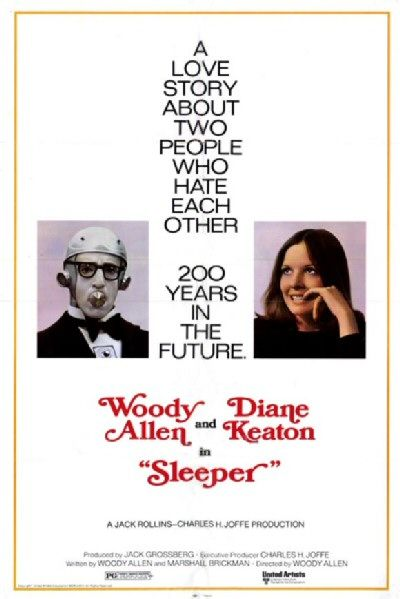
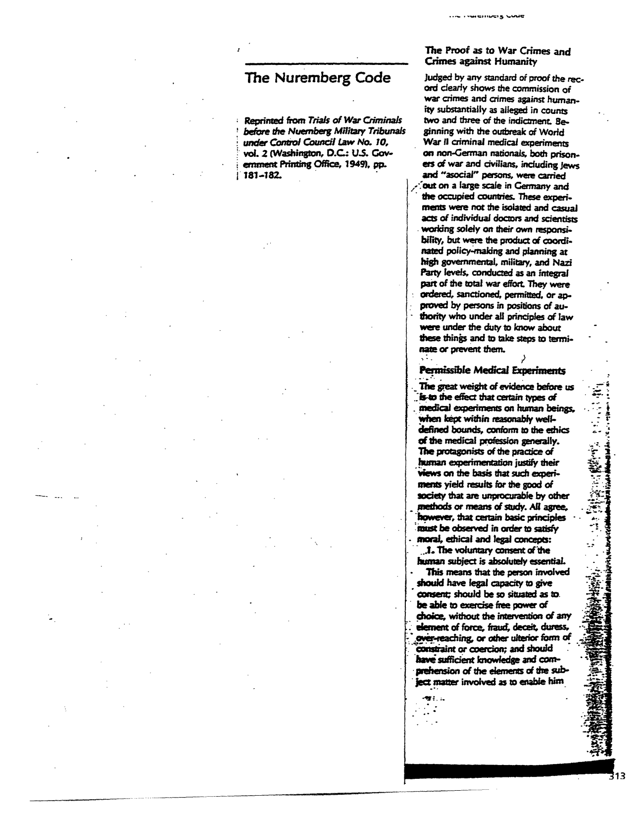
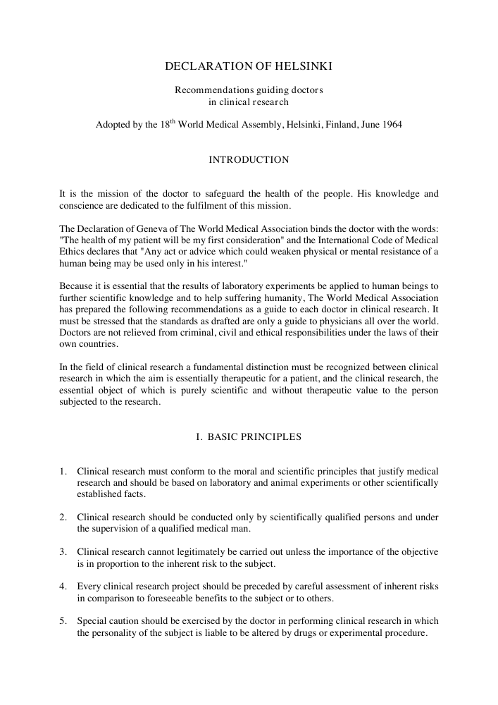
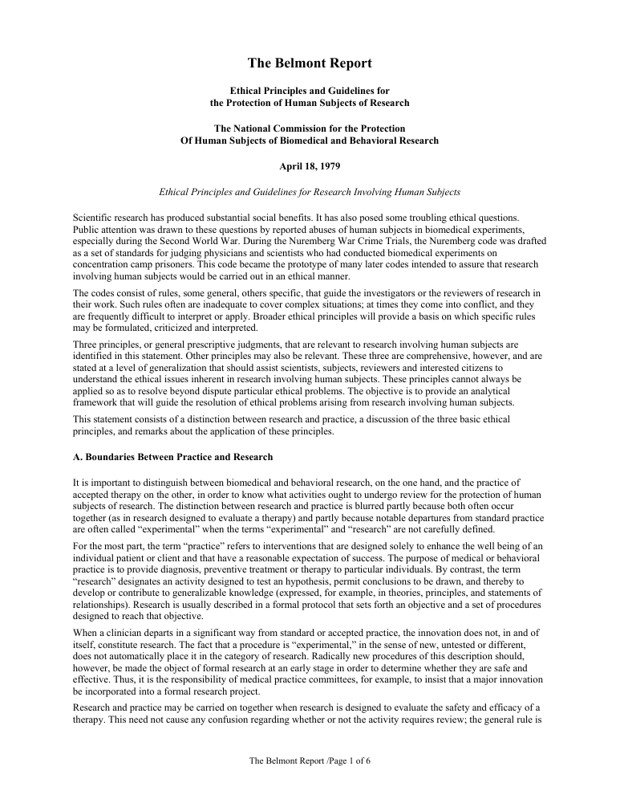
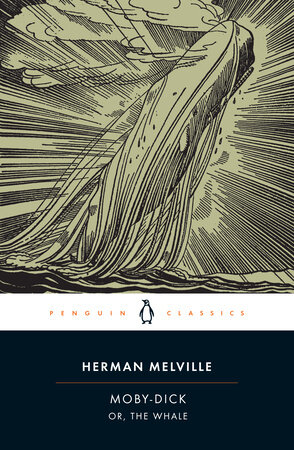

1:19:57 · 22 OPERE
Culto della personalità e manipolazione della collettività.
Il filo del discorso
Il video interroga il culto della personalità come meccanismo che, secondo il relatore, sopravvive anche nelle democrazie attraverso leader mediatici temporanei e obbedienza all’autorità. Le Bon e Freud forniscono il quadro iniziale, mentre Pasolini, l’Iliade e i riferimenti biblici introducono il contrasto fra successo del potere e responsabilità morale. La satira di Sleeper, Idiocracy e Life of Brian serve a mostrare il bisogno collettivo di riconoscere un capo e di trasformare i suoi gesti in segni. Il romanzo Miss Merkel è invece commentato come esempio contemporaneo di celebrità politica, con una classificazione del pubblico che la scheda corregge. La parte centrale passa agli apparati di polizia, al saggio di Browder e alla memoria del nazismo, poi a Milgram, My Lai e al Codice di Norimberga. Il tema del consenso nella ricerca lega il probabile volume di Annas e Grodin alla Dichiarazione di Helsinki e al Belmont Report. Il relatore applica questi riferimenti alle politiche pandemiche, alla comunicazione scientifica e alla moderazione delle piattaforme. La scheda distingue tali analogie dalle prove storiche, cliniche e giuridiche e non assume come fatti le accuse di una regia comune o le diagnosi implicite sui gruppi. Le affermazioni su assenza di trial, effetti respiratori delle mascherine e percentuali di efficacia sono contestualizzate e corrette con fonti primarie. Restano non accertati i singoli episodi di cronaca privi di documentazione e ogni nesso causale dedotto dalla sola successione temporale. La conclusione letteraria trova in Bartleby e nel suo preferirei di no una figura del dissenso nonviolento: è l’interpretazione morale e politica del relatore, distinta da una raccomandazione clinica o dalla dimostrazione di un illecito.
I libri nel discorso

Psicologia delle masse e analisi dell’Io
Copertina: Einaudi, 2013
Riferimento ricavato dalla trascrizione automatica.
Passaggio 2:23 ↗ · Fonti e libro ↗
Psicologia delle folle
Copertina: Apogeo · 2025 · nuova traduzione dell’edizione integrale originale
Immagine autentica dell’opera, controllata visivamente; l’edizione di riferimento non è attribuita al filmato.
Riferimento ricavato dalla trascrizione automatica.
Passaggio 2:34 ↗ · Fonti e libro ↗
La ballata delle madri
Copertina della raccolta: Garzanti · 2001
La ballata delle madri è contenuta in Poesia in forma di rosa. L’immagine mostra la raccolta Garzanti del 2001, con prefazione di Edoardo Esposito, non un volume autonomo della poesia né l’edizione del video.
Riferimento ricavato dalla trascrizione automatica.
Passaggio 12:49 ↗ · Fonti e libro ↗
Bibbia
Identificazione probabile
Copertina: San Paolo, 2014 · Nuova Versione dai Testi Antichi · edizione di riferimento
Riferimento ricavato dalla trascrizione automatica.
Passaggio 13:23 ↗ · Fonti e libro ↗
Iliade
Identificazione probabile
Copertina: Einaudi · ET Classici · 2014
Copertina autentica dell’edizione di riferimento, controllata visivamente. Non identifica l’esemplare letto o citato nel video.
Riferimento ricavato dalla trascrizione automatica.
Passaggio 15:21 ↗ · Fonti e libro ↗
Sleeper
United Artists · locandina promozionale Sleeper 1973, variante 2: United Artists · locandina promozionale Sleeper 1973, variante 2
Locandina autentica del film con Allen e Keaton, riprodotta dall’archivio IMP; non copertina di un libro o fotogramma.
Riferimento ricavato dalla trascrizione automatica.
Passaggio 17:16 ↗ · Fonti e libro ↗
Idiocracy
Immagine promozionale del film · distribuzione digitale: Film statunitense del 2006, regia di Mike Judge, con Luke Wilson e Maya Rudolph, distribuito da 20th Century Fox. Immagine promozionale autentica della distribuzione digitale; non una copertina libraria. La scheda statunitense distingue il 2006 di uscita dal copyright grafico del 2005.
Grafica ufficiale con il titolo Idiocracy e il cast, vista integralmente nella scheda Apple TV. Non è una prova delle tesi sociologiche del relatore.
Riferimento ricavato dalla trascrizione automatica.
Passaggio 17:34 ↗ · Fonti e libro ↗Miss Merkel: Mord in der Uckermark
Identificazione probabile
Rowohlt Kindler · primo volume 2021 · ISBN 9783463406657: Rowohlt Kindler · primo volume 2021 · ISBN 9783463406657
Copertina ufficiale del primo romanzo della serie, non di un successivo Miss Merkel. Edizione mostrata nel video da controllare visivamente; identificazione dalla descrizione e dalla data, non dal solo tema.
Riferimento ricavato dalla trascrizione automatica.
Passaggio 21:04 ↗ · Fonti e libro ↗
Monty Python’s Life of Brian (Brian di Nazareth)
Edizione homevideo: The Immaculate Edition: Film britannico del 1979 diretto da Terry Jones, prodotto da John Goldstone,94 minuti. Immagine dell’edizione home video Sony The Immaculate Edition, riprodotta nella scheda ufficiale del distributore; non una copertina libraria.
Immagine autentica Sony vista integralmente: titolo monumentale giallo Life of Brian, marchio Monty Python, sfondo blu e dicitura The Immaculate Edition. Il file fa parte della presentazione delle edizioni Blu-ray e DVD nel sito del distributore. Non è dichiarato manifesto originale del 1979, né edizione posseduta dal relatore. Immagine e crediti cinematografici sono riscontrati separatamente.
Riferimento ricavato dalla trascrizione automatica.
Passaggio 23:22 ↗ · Fonti e libro ↗
Eclisse della ragione. Critica della ragione strumentale
Identificazione probabile
Copertina: Einaudi, Biblioteca Einaudi, 2000, traduzione di Elena Vaccari Spagnol, ISBN 9788806154370. Il titolo è anche catalogato con la variante Eclissi; la copertina acquisita reca Eclisse. Originale inglese Eclipse of Reason, 1947.
Copertina autentica Einaudi bianca con fascia blu, autore, titolo e sottotitolo leggibili. Non è la copertina del diverso Crepuscolo. Il collegamento all’editore Bloomsbury verifica l’opera originale, mentre la copertina italiana proviene da IBS.
Riferimento ricavato dalla trascrizione automatica.
Passaggio 37:08 ↗ · Fonti e libro ↗Foundations of the Nazi Police State: The Formation of Sipo and SD
University Press of Kentucky · paperback 2004 · ISBN 9780813191119: University Press of Kentucky · paperback 2004 · ISBN 9780813191119
Copertina ufficiale della ristampa 2004 del libro 1990, non diversa opera. Nome Browder controllato sul catalogo, non ricavato con sicurezza dalla sola fonetica nella trascrizione automatica.
Riferimento ricavato dalla trascrizione automatica.
Passaggio 42:17 ↗ · Fonti e libro ↗
Costituzione della Repubblica Italiana
Copertina dell’edizione Intra aggiornata al 2023: Intra · 2023 · introduzione di Umberto Vincenti
Copertina autentica del testo integrale, aggiornata alla legge costituzionale 26 settembre 2023 n.1. È successiva al filmato del 2019 e non rappresenta la versione storica letta dal relatore. Umberto Vincenti firma l’introduzione.
Riferimento ricavato dalla trascrizione automatica.
Passaggio 46:10 ↗ · Fonti e libro ↗The Nazi Doctors and the Nuremberg Code: Human Rights in Human Experimentation
Identificazione probabile
Oxford University Press · frontespizio originale della raccolta 1992: Oxford University Press · frontespizio originale della raccolta 1992
Frontespizio autentico della raccolta di Annas e Grodin da Google Books, pagina PR3, con titolo e curatori; non copertina del Codice di Norimberga né di un libro scritto dai medici nazisti.
Riferimento ricavato dalla trascrizione automatica.
Passaggio 57:04 ↗ · Fonti e libro ↗
Codice di Norimberga (The Nuremberg Code)
Pagina del documento: riproduzione MIT: Dieci principi formulati nel verdetto del processo ai medici del 1947. Testo ripubblicato in Trials of War Criminals before the Nuernberg Military Tribunals, volume II, U.S. Government Printing Office, 1949, pp. 181–182. Immagine della prima pagina della riproduzione distribuita dal MIT nel corso STS.011, autunno 2007.
Vista integralmente la pagina PDF 2 della lettura MIT: titolo The Nuremberg Code, credito alla pubblicazione governativa del 1949, intestazione sui crimini contro l’umanità e inizio dei principi Permissible Medical Experiments. È una riproduzione didattica con numero di pagina 313, non una copertina, un frontespizio del 1947 o una scansione diretta della pagina 181 del volume governativo.
Riferimento ricavato dalla trascrizione automatica.
Passaggio 56:48 ↗ · Fonti e libro ↗
Dichiarazione di Helsinki (Declaration of Helsinki)
WMA · pagina iniziale della versione storica 1964: WMA · pagina iniziale della versione storica 1964
Prima pagina del documento ufficiale WMA del 1964. Non copertina e non versione vigente 2024: documento storico relativo alla data citata. Le versioni pregresse sono archiviate dalla WMA per finalità storiche.
Riferimento ricavato dalla trascrizione automatica.
Passaggio 1:03:53 ↗ · Fonti e libro ↗
The Belmont Report: Ethical Principles and Guidelines for the Protection of Human Subjects of Research
Fred Hutch · prima pagina di una ripubblicazione del Belmont Report 1979: Fred Hutch · prima pagina di una ripubblicazione del Belmont Report 1979
Pagina iniziale della ripubblicazione testuale conservata dal centro di ricerca Fred Hutch, con impaginazione integra. Non facsimile dell’edizione federale originale né copertina. Identità e data del rapporto verificate sul testo ufficiale HHS.
Riferimento ricavato dalla trascrizione automatica.
Passaggio 1:04:01 ↗ · Fonti e libro ↗
Bartleby lo scrivano
Copertina della raccolta: Bompiani · Bartleby lo scrivano e altri racconti · 2018
Copertina della raccolta Bompiani che contiene Bartleby lo scrivano. Non è presentata come copertina di un’edizione autonoma del racconto né come l’esemplare citato nel video.
Riferimento ricavato dalla trascrizione automatica.
Passaggio 1:16:36 ↗ · Fonti e libro ↗
Moby-Dick; or, The Whale
Penguin Classics · edizione 2002 · ISBN 9780142437247: Penguin Classics · edizione 2002 · ISBN 9780142437247
Copertina ufficiale Penguin Classics con introduzione di Andrew Delbanco e commento di Tom Quirk; non prima edizione 1851 né esemplare identificato nel video.
Riferimento ricavato dalla trascrizione automatica.
Passaggio 1:17:06 ↗ · Fonti e libro ↗
Benito Cereno
Copertina: Marsilio, 2012, Letteratura universale / Frecce, a cura e traduzione di Luigi Ballerini, testo inglese a fronte, 416 pagine. Opera pubblicata nel 1855 e raccolta in The Piazza Tales nel 1856.
Copertina autentica crema di Marsilio con autore e titolo rossi e immagine ovale di una nave. È la specifica edizione bilingue 2012; non è Bartleby né una raccolta generica.
Riferimento ricavato dalla trascrizione automatica.
Passaggio 1:17:12 ↗ · Fonti e libro ↗
L’origine delle specie
Copertina: Bollati Boringhieri · I grandi pensatori
Riferimento ricavato dalla trascrizione automatica.
Passaggio 1:17:49 ↗ · Fonti e libro ↗
Il capitale
Copertina: Editori Riuniti · Libro primo
Riferimento ricavato dalla trascrizione automatica.
Passaggio 1:17:58 ↗ · Fonti e libro ↗
Così parlò Zarathustra
Copertina: Adelphi · Piccola Biblioteca Adelphi · riferimento
Immagine associata all’ISBN di riferimento e controllata visivamente; edizione e traduzione non identificate come quelle citate o lette nel video.
Riferimento ricavato dalla trascrizione automatica.
Passaggio 1:18:01 ↗ · Fonti e libro ↗